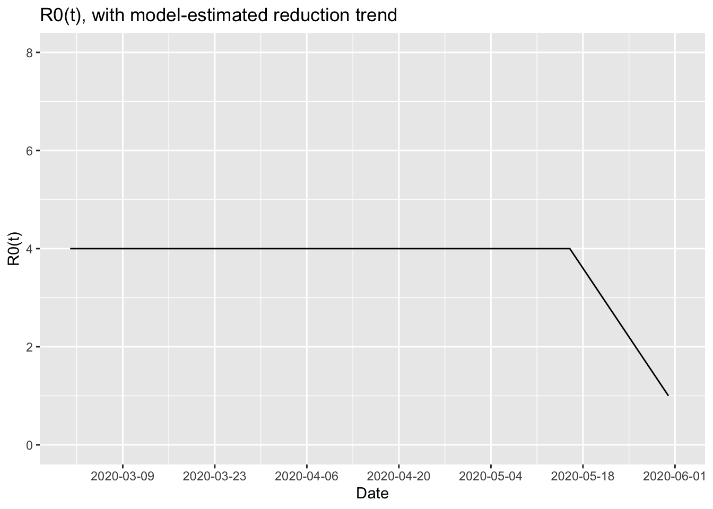

Methods and data
(3.1) Model overview
Why our model is unique
- Our epidemic compartmental model uses stochastic differential equations and approximate Bayes calculation techniques for parameter estimation.
- Importantly, the model presents the uncertainty in all estimations and predictions.
- We incorporate prior information for parameter specification.
- We incorporate risk factors (e.g. advanced age, existing health conditions) into the analysis.
- We can modify parameters at different time points, enabling the specification of interventions, e.g. social distancing scenarios
Stochastic epidemic model:
- Deterministic model: for given values of parameters, dynamics across compartments will be fixed.
- Stochastic model: Appropriate probability distributions are used model the transfer of individuals across compartments.
What a stochastic model allows:
- Looking back: Provides a better framework for parameter estimation, based on observed data
- Looking forward: Enables forecasts with confidence bounds that account for variability in parameters
Approximate Bayesian Computation (ABC) for parameter estimation:
- Allows us to incorporate the uncertainty in all the parameters in fitting the model to data and estimating parameters
- Allows us to include all prior information and/or assumptions about the distribution (the range of values) for each parameter
- Allows us to prioritize data input that is more reliable in fitting the model to data (e.g., not including more unreliable early illness count data)
(3.2) Stochastic differential equation epidemic model
Flow diagram

Compartmental model flow diagram
System of Equations
\[ \begin{align*} dS/dt &= -\beta S(I+A)\\ dE/dt &= \beta S(I+A) - \tfrac{1}{d_{EI}}E\\ dA/dt &= \tfrac{1-r}{d_{EI}}E - \tfrac{1}{d_{IR}}A\\ dI/dt &= \tfrac{r}{d_{EI}}E - (\tfrac{\alpha}{d_{IH}}\tfrac{1-\alpha}{d_{IR}})I\\ dH/dt &= \alpha (\tfrac{\alpha}{d_{IH}}\tfrac{1-\alpha}{d_{IR}})I - (\tfrac{\kappa}{d_{HQ}}\tfrac{1-\kappa}{d_{HR}})H \\ dQ/dt &= \kappa (\tfrac{\kappa}{d_{HQ}}\tfrac{1-\kappa}{d_{HR}})H - (\tfrac{\delta}{d_{QD}}\tfrac{1-\delta}{d_{QR}})Q \\ dV/dt &= p_V Q\\ dD/dt &= \delta (\tfrac{\delta}{d_{QD}}\tfrac{1-\delta}{d_{QR}})Q\\ dR/dt &= (1-\alpha) (\tfrac{\alpha}{d_{IH}}\tfrac{1-\alpha}{d_{IR}})I + (1-\kappa) (\tfrac{\kappa}{d_{HQ}}\tfrac{1-\kappa}{d_{HR}})H + (1-\delta)(\tfrac{\delta}{d_{QD}}\tfrac{1-\delta}{d_{QR}})Q + \tfrac{1}{d_{IR}}A \ \end{align*} \]
\[ R0 = \beta ({\frac{r}{\tfrac{\alpha}{d_{IH}}+\tfrac{1-\alpha}{d_{IR}}}+ (1-r){d_{IR}}}) \\ N=S+E+A+I+H+Q+D+R \]
Model parameters
| Parameter | Description | Value |
|---|---|---|
| \(R0\) | Basic reproductive number | Estimated |
| \(\beta\) | transmission rate | Analytically derived from model and R0 |
| \(d_{EI}\) | days between exposure and infectivity (incubation period) | 5 days |
| \(d_{IH}\) | days between symptom onset and hospitalization (if required) | 10 days |
| \(d_{IR}\) | days between symptom onset and recovery (if not hospitalized) | 7 days |
| \(d_{HQ}\) | days between hospitalization and ICU (if required) | 1 days |
| \(d_{QR}\) | days between hospitalization and recovery (if ICU not required) | 12 days |
| \(d_{QD}\) | days between ICU and fatality | 8 days |
| \(d_{QR}\) | days between ICU and recovery | 7 days |
| \(\alpha\) | probability infected (I) requires hospitalization (vs. recovers) | Estimated |
| \(\kappa\) | probability hospitalized (H) requires ICU (vs. recovers) | Estimated |
| \(\delta\) | probability ICU (Q) patient dies | Estimated |
| \(p_V\) | probability ventilation (V) required given ICU | Estimated |
| \(N\) | Total population size | |
| \(S\) | Susceptible population | |
| \(E\) | Exposed not yet infectious | |
| \(A\) | Infected, unobserved | |
| \(I\) | Infected, observed | |
| \(H\) | In Hospital | |
| \(Q\) | In ICU | |
| \(V\) | On ventilator | |
| \(D\) | Dead | |
| \(R\) | Recovered/removed |
Model parameters - fixed, taken from literature: - Transition times between compartments - Sources provided at this link
Model Parameters — estimated by our model - \(R0\), the reproductive number or average number of new infections generated by an infected person in a completely susceptible population - \(r\), the proportion of illnesses that are observed - \(Frac_{R0}\), the reduction in the initial R0 due to social distancing - \(\alpha\), the probability of hospitalization given illness, i.e. \(Pr(Hospital | Illness)\) - \(\kappa\), the probability of ICU care necessary given hospitalization, i.e. \(Pr(ICU | Hospital)\) - \(p_v\), the probability of ventilation given ICU care, i.e. \(Pr(Ventilation | ICU)\) - \(\delta\), the probability of death given ICU care, i.e. \(Pr(Death | ICU)\)
(3.3) Prior parameter specifications
Model estimated parameters: Prior information and posterior estimates Here we summarize our estimated parameter values for key epidemic and model quantities:
- \(R0\), the reproductive number or average number of new infections generated by an infected person in a completely susceptible population
- \(r\), the proportion of illnesses that are observed
- \(Frac_{R0}\), the reduction in the initial R0 due to social distancing
- \(Pr(Hospital | Illness)\), the probability of hospitalization given illness
- \(Pr(ICU | Hospital)\), the probability of ICU care necessary given hospitalization
- \(Pr(Ventilation | ICU)\), the probability of ventilation given ICU care
- \(Pr(Death | ICU)\), the probability of death given ICU care
Because our model is stochastic and we are using Bayesian techniques for parameter estimation, each posterior parameter estimate is represented by a distribution of likely values.
Summary of key estimated parameters
Summary of key statistics of each estimated parameter: the mean and the standard deviation (sd).
| R0 | Prop. cases detected (r) | Frac R0 Mar11 | Pr(Death|ICU) | Pr(Hospital|Illness) | Pr(ICU|Hospital) | Pr(Ventilation|ICU) | |
|---|---|---|---|---|---|---|---|
| mean | 4.1649 | 0.0267 | 0.2309 | 0.8537 | 0.2602 | 0.3012 | 0.5117 |
| sd | 0.2487 | 0.0046 | 0.0539 | 0.1214 | 0.0458 | 0.0412 | 0.0541 |
Prior on illness severity probabilities \(Pr(Hospital | Illness)\), \(Pr(ICU | Hospital)\), \(Pr(Death | ICU)\): Risk modeling and previous COVID-19 studies
We use previous studies to narrow the specification of the probability of hospitalization given illness, admittance to the intensive care unit (ICU) given being in hospital, ventilation given being in ICU, and death given being in ICU by incorporating risk factors, including age, sex, smoking and other comorbidities. The prevalence of these risk factors in Los Angeles County is also included.
The comorbidities included in the “any comorbidity” category are: hypertension, diabetes, cardiovascular disease, cerebrovascular disease / stroke, cancer, COPD, and athsma. It is important to note that each of these conditions has its own risk of disease outcome; future models will disaggregate risk estimates by specific risk conditions when sufficient data becomes available to produce these estimations.
(1) Estimating the conditional probability of COVID illness severity given combinations of risk factors
- Using studies reporting the marginal risk of severe COVID-19 outcomes given individual risk factors, we develop a statistical model to estimate the probability of COVID illness trajectories for individuals with combinations of risk factors.
- Specifically, we estimate the probability that individuals having (or not) combinations of risk factors are admitted to hospital given having acquired illness \(Pr(Hospital | Illness)\), are admitted to the ICU given admittance to hospitalized \(Pr(ICU | Hospital)\), and that die given being admitted to the ICU \(Pr(Death | ICU)\).
- Our methodology for joint risk factor estimation relies on a model, called JAM, developed for use in genome-wide analyses to identify the conditional relative risk (RR) of phenotypic occurrence given joint combinations of genes from two pieces of information: (i) the marginal RR between single genes and phenotype and (ii) the correlation structure between the genes.
- We apply the JAM model to estimate the conditional RR of COVID-19 illness severity (hospitalization, ICU, and death) given joint combinations of risk factors. For information informing (i) we obtain the marginal RR between individual risk factors and COVID-19 illness severity from published COVID-19 studies (sources below, peer-reviewed where available). For (2), we obtain the correlation structure between the risk factors using data from The National Health and Nutrition Examination Survey (NHANES). NHANES is a survey research program conducted by the National Center for Health Statistics (NCHS) to assess the health and nutritional status of adults and children in the United States, and to track changes over time. We use the NHANES cohort of 2017-2018.
- After obtaining the conditional RR of COVID-19 illness severity (hospitalization, ICU, and death) given joint combinations of risk factors, we convert these to the probabilities \(Pr(Hospital | Illness, Profile_i)\), \(Pr(ICU | Hospital,Profile_i)\), and \(Pr(Death | ICU,Profile_i)\).
- The analysis we present here has taken the combinations of risk factors and grouped these into 5 key risk groups according to similar within-group levels of the probabilities \(Pr(Hospital | Illness, Profile_i)\), \(Pr(ICU | Hospital, Profile_i)\), and \(Pr(Death | ICU, Profile_i)\).
- To produce an estimate of the overall \(Pr(Hospital | Illness)\) across all risk groups for L.A. County and subpopulations, we take the weighted average of the probability for each risk group and the prevalence of the risk group in all illnesses, i.e.
\[ \begin{align*} Pr(Hospital | Illness) = \sum_i Pr(Group_i | Illness)Pr(Hospital|Group_i,Illness) \end{align*} \] We assume that the prevalence of the risk group in the ill population, \(Pr(Group_i|Illness)\), is equal to the prevalence of the group in the general population of L.A. County, i.e. \(Pr(Group_i)\). We again borrow the correlation structure between risk factors derived from the NHANES cohort to estimate the population prevalence \(Pr(Group_i)\) from available data on the prevalence of individual risk factors.
The same approach is applied to estimate \(Pr(ICU | Hospital)\) and \(Pr(Death|ICU)\): \[ \begin{align*} Pr(ICU | Hosptial) = \sum_i Pr(Group_i | Hospital)Pr(ICU|Group_i,Hospital)\\ Pr(Death | ICU) = \sum_i Pr(Group_i | ICU)Pr(Death|Group_i,ICU) \end{align*} \]
(2) Estimating the proportion of each risk group that will make up the cohorts of COVID patients admitted to hospital, admitted to ICU, or that die in L.A. County and SPAs
- We estimate the proportion of each risk group that will make up the cohorts of COVID patients admitted to hospital (\(Pr(Group_i|Hospital\))), admitted to ICU (\(Pr(Group_i|ICU\))), or death (\(Pr(Group_i|Death\))) in L.A. County population and each SPA, as the relative share of each group and disease status, i.e. \[ \begin{align*} Pr(Group_i|Hospital) = \frac{Pr(Group_i|Illness)Pr(Hospital|Group_i,Illness)}{Pr(Hospital|Illness)}\\ Pr(Group_i|ICU) = \frac{Pr(Group_i|Hospital)Pr(ICU|Group_i,Hospital)}{Pr(ICU|Hospital)}\\ Pr(Group_i|Death) = \frac{Pr(Group_i|ICU)Pr(Death|Group_i,ICU)}{Pr(Death|ICU)}\\ \end{align*} \] We multiply the group prevalences above by the trajectory median values for number in hospital, ICU, and death from the epidemic model to arrive at the trajectory breakdowns presented above.
Data sources
COVID-19 Illness Trajectory Relative Risks
Studies on COVID-19 clinical presentation and trajectories to inform the probability of hospitalization, ICU, and ventilation based on single risk factors:
- Guan, Wei-jie, et al. “Clinical characteristics of coronavirus disease 2019 in China.” New England Journal of Medicine (2020).
- Petrilli, Christopher M., et al. “Factors associated with hospitalization and critical illness among 4,103 patients with COVID-19 disease in New York City.” medRxiv (2020).
- Summary table of the modified Relative Risks (RR) coming from these studies, which are used by our statistical model estimates
L.A. County Risk Factor Prevalences - Los Angeles County Health Survey - UCLA California Health Information Survey
Prior on \(R0\), Reproductive number: Previous COVID-19 studies
- Mean = 4.165
Standard deviation = 0.249
\(R0\) prior estimate is based on values for \(R0\) estimated from other published studies on COVID-19.
Prior and posterior 
Prior on \(r\), fraction of illnesses that are observed: Seroprevalence studies
- Mean = 0.027
Standard deviation = 0.005
- A seroprevalence study conducted on the Los Angeles on April 10-11, 2020, by Neeraj Sood and LADPH, found the prevalence of antibodies in 3.6% (1.7,5.2) of the sampled population.
We use this information to inform two pieces of information: (i) the prior distribution for \(r\), the fraction of observed illnesses over all illnesses, and (ii) an observed data point for the number of counts in the Recovered compartment. We make the following assumptions:
Prior distribution for \(r\) - The seroprevalence study retuns an estimated % of the population of L.A. that has antibodies for COVID-19 by the study date. We assume this is equal to the proportion of total recovered individuals as of a week prior to the study date, April 4, 2020, since it takes a week for antibodies to develop. - Meanwhile, we assume the fraction of observed illnesses \(r\) is approximately equal to the fraction of recovered cases as:
\[ \begin{align*} \mathbf{r} = \frac{cum. obs. I(t = t')}{cum. tot. I(t=t')}\\ \approx \frac{cum. obs. R(t=t')}{cum.tot.R(t=t')}\\ \end{align*} \] - The seroprevalence study informs the denominator, the total recovered cases at \(t'\) = April 4. - The numerator, the “observed” recovered cases at time \(t'\), is assumed to be approximately equal to the observed illnesses at time \(t'-\) [1,3] weeks, which is the assumed period from infectiousness to recovery. - We specify the minimum and maximum values for the prior for \(r\) \(Pr(r)\) using the equation above with the range of the % of the population with antibodies on of April 4, and the number of observed illnesses 1-3 weeks prior to that. - In addition to using the seroprevalence study to inform the prior distribution on \(r\), we use it to inform the
Data point on number in Recovered compartment
We use the results of the seroprevalence study to inform a fixed data point representing the number of counts in the Recovered compartment on April 4. We use this data point together with the approximated timing of the first recovered case (1-3 weeks after the start date of the outbreak) to interpolate an exponential distribution in the time series of counts in the Recovered compartment. This is then used as an observed data input alongside the other observed compartment variables (illnesses, hospitalizations, deaths, etc.) in the parameter estimation procedure.
These estimates will be greatly improved by time series of COVID-19 seroprevalence, i.e. as results of future seroprevalence studies become available.
Prior and posterior
## Warning: Removed 43 row(s) containing missing values (geom_path).
Prior on \(Frac_{R0}\), the reduction in the initial R0 due to social distancing: Mobility data
- Mean = 0.231
Standard deviation = 0.054
We use mobility data to narrow the specification of the reduction in the average number of new infections due to an infected person (R0) in a completely susceptible population under recent social distancing restrictions.
Effectively, reductions in mobility correspond to a proportional reduction in R0
- Reduction in mobility observed in LA County:

Mobility reduction
and

encounter reduction
Source: Assessing changes in commuting and individual mobility in major metropolitan areas in the United States during the COVID-19 outbreak and Unacast COVID-19 Social Distancing Scoreboard
- Our modeled reduction in R0 timeline:
## Warning: Removed 2 row(s) containing missing values (geom_path).
Prior and posterior 
Joint posterior densities of interest

(3.4) Projections by Key Risk Groups and Risk Factors
We extend the risk factor analysis above to estimate the proportion of each risk group that will make up the cohorts of COVID patients admitted to hospital, admitted to ICU, or that die in L.A. County, across the SPAs, and across the race/ethnicity groups
Estimating the conditional probability of COVID illness severity given combinations of risk factors
- We estimate the proportion of each risk group that will make up the cohorts of COVID patients admitted to hospital (\(Pr(Group_i|Hospital\))), admitted to ICU (\(Pr(Group_i|ICU\))), or death (\(Pr(Group_i|Death\))) in L.A. County population and each SPA, as the relative share of each group and disease status, i.e. \[ \begin{align*} Pr(Group_i|Hospital) = \frac{Pr(Group_i|Illness)Pr(Hospital|Group_i,Illness)}{Pr(Hospital|Illness)}\\ Pr(Group_i|ICU) = \frac{Pr(Group_i|Hospital)Pr(ICU|Group_i,Hospital)}{Pr(ICU|Hospital)}\\ Pr(Group_i|Death) = \frac{Pr(Group_i|ICU)Pr(Death|Group_i,ICU)}{Pr(Death|ICU)}\\ \end{align*} \] We multiply the group prevalences above by the trajectory median values for number in hospital, ICU, and death from the epidemic model to arrive at the trajectory breakdowns presented above.
(3.5) Data
Illness case data
- We use current numbers of infected (observed), hospitalized, ICU, ventilated, and deaths, as well as the capacity (total number of resouces available) at hospitals, ICUs, and ventilators in L.A. County from the Los Angeles County Department of Public Health, updated daily by Faith Washburn (shared privately)
- The data used in this version of the report includes counts up through 2020-05-20
Data processing: Skilled Nursing Facility (SNF) counts removed from LA County daily counts
- We are fitting our model to the general COVID-19 illness trends in L.A. County. Due to the large number of outbreaks and the share of deaths coming from nursing homes (Skilled Nursing Facilities, SNFs), we have removed estimated numbers of illnesses, hospitalizations, ICU visits, ventilations, and deaths from SNFs. We fit our general population model to the data with the SNF cases removed, as illustrated below.
- Counts removed from Illnesses, Hospitalizations, Ventilations, and Deaths

(3.6) Model Limitations
- This model does not account for differences in contact patterns within and across key groups, such as workplaces, schools, and communities; or of group-specific social distancing scenarios.
- This model does not account for the role of interventions beyond social distancing, such as contact tracing and surveillance testing, which are critical to identifying and limiting the spread of the virus.
- This model focuses only on the direct effects of stay-at-home orders on COVID-19 infection transmission and hospitalization. It does not account for the non-COVID-19 related public health impact of stay-at-home orders.
- This model does not account for unanticipated behavioral responses to the effects of interventions or mitigation strategies
- The accuracy of the parameter estimation depends on the accuracy of the prior specifications and any fixed parameters employed, including the incubation and recovery period. As new information about the epidemiological characteristics of COVID-19 continues to arise, model estimation will need to be continuously updated.
- Incorporating the latest information into our models is possible and will be key to maintaining its relevance for decision insights.